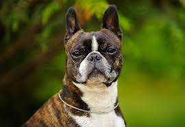

Overview
The Boston Terrier is a lively little companion recognized by his tight tuxedo jacket, sporty but compact body, and the friendly glow in his big, round eyes. His impeccable manners have earned him the nickname 'The American Gentleman.' Boston Terriers are compact, short-tailed, well-balanced little dogs weighing no more than 25 pounds. The stylish 'tuxedo' coat can be white and either black, brindle, or seal (dark brown). The head is square, the muzzle is short, and the large, round eyes can shine with kindness, curiosity, or mischief. Ever alert to their surroundings, Bostons move with a jaunty, rhythmic step. It's a safe bet that a breed named for a city'¿the Havanese or Brussels Griffon, for instance'¿will make an excellent urban pet. Bostons are no exception: they are sturdy but portable, people-oriented, and always up for a brisk walk to the park or outdoor cafe. A bright dog with a natural gift for comedy, the dapper Bostonian is a steady source of smiles.
Characteristics
- Short, broad muzzles with a white band.
- Short tail, which can be straight or curled like a corkscrew.
- Friendly and tolerant nature
- Boston Terriers tend to love people and make great dogs for families
Care
For the most part, Bostons are a fairly low-maintenance breed. They do require regular exercise, grooming, and training, like any dog, but in amounts that are lower than many other breeds. If left alone too often, however, or not provided with enough mental and physical stimulation, they can become destructive or develop annoying behaviors. Remember that your Boston terrier was bred to be a companion dog and wants to be with you as much as possible. Boston terriers are relatively energetic and should receive about an hour of exercise per day. A couple of daily walks, games of fetch, playing with puzzle toys, and running around in a secure area should suffice. Dog sports, such as agility and rally, can help to burn their mental and physical energy.